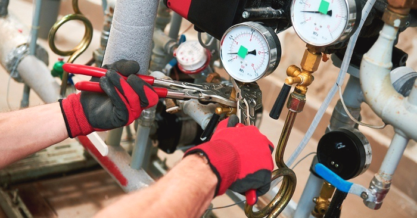
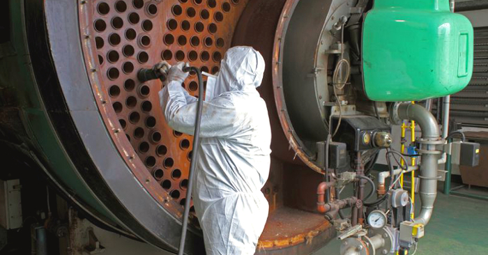

What Does a Boiler Service Include?
Boiler services can include many different things, such as repairing or replacing boilers and parts, cleaning and checking systems, and more. Some companies may also offer Boiler Service Contracts, which can include additional services such as routine maintenance and repairs. It's important to choose a company that specializes in boiler services if you want the best possible results.
A boiler service is a verification check that a Gas Safe engineer carries out on boilers in order to make sure they are operating correctly. The Gas Safe-certified engineer will ensure the correct gas pressure is being managed, and that he will ensure that no exhaust gas is being distributed from the fuel. Furthermore, the boiler is examined for flaws in the flue and the combustion process.
What Is Boiler Service?
A boiler service is a new annual inspection and checkup relating to your boiler. It's service boiler makers encourage. Your boiler assurance can be void if you do not service your boiler each year. Thus, it is binding upon you to get your boiler serviced each year.

A boiler repair is only able to be conducted by a Gas Safe registered engineer. You cannot conduct it yourself. Thanks to the certificate provided by Gas Safe, the boiler is guaranteed to be in good condition based on a judge's inspection. To obtain the boiler service certificate, you'll need it to be performed by a Gas Safe engineer.
What’s Included in a Boiler Service?
When you call a Gas Certified technician for service on your boiler, he will perform these operations.
Visual Inspection: At first, an engineer who is Gas Safe-certified will do an examination of your boiler. The Gas Safe registered engineer that you hire will have to look for himself. Bear in mind that a rough estimate for the services of a Gas Safe registered engineer for this service is around £100 per year. He will check your boiler and its controls and confirm that they are working properly.
Removal of the Casing: After checking out the exterior of the boiler's case, the Gas Safety registered engineer undid it, and then examined some of its biggest parts. He made sure they were operating as they were expected to. The engineer will examine several elements of the engine's casing. These may include the heat exchanger, main injector, burner, and spark probe.
Flue Check: By carrying out this check, the engineer will assure that no hanging objects are in the way of the flue terminals. He will also see if the port is locked safely or not. This will prove helpful as it lets him check if there are any unsafe emissions being emitted.
Gas Pressure Check: A boiler functions by using the water pressure. Thus, the boiler must have a sufficient amount of gas pressure at all times. If the pressure is inadequate, the water in your faucets, showers, and radiators will not heat to the level intended.
Boiler Fired Up: Such an error check allows an engineer to see if there are any blunders in the boiler.

Importance of Annual Boiler Servicing
Many people tend to emphasize the disadvantages of employing a boiler restoration service, but below are all the reasons why you should need one.
Catch boiler problems early: Arranging yearly spy devices enables you to go back in time if there's some drawback with your boiler. Having your boiler serviced once a year can help your system run successfully in the long winter months.
Boiler repairs are costly: Realizing that you'll have to replace your damaged item when it can no longer operate correctly can save you a fortune.
When Should I Service My Boiler?
An annual boiler service is to ensure the safety of the individuals in the home and the functioning of the boiler. Even if your boiler is working, it's suggested to still get the service done annually to keep your guarantee valid.
The ideal time to have your boiler serviced is the summer. This is the time when you need the boiler less as you rely on it less. For further details, you will be very happy to know that your boiler is fully capable of heating your home in winter. Since summer is off-season, you will find a mechanic very quickly.
In conclusion, if your boiler is not working and you are not sure what the problem is, it is important to call a professional for service. There are many different types of services that a professional can provide, including checking the system for leaks, cleaning the filters, and fixing the problem. By calling a professional, you can ensure that your boiler is running properly and that any problems are fixed as soon as possible.